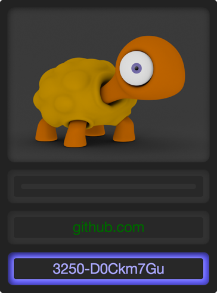
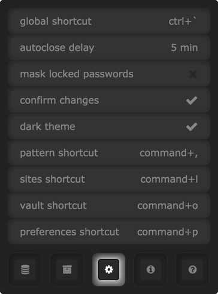

Manual
Setup
When you start the application a turtle icon will be added to your menu bar:
Clicking the menu icon will open the application window and prompt you to enter your master key:
… and a default pattern:
Tips for choosing a pattern
The length of the pattern determines the length of the generated passwords.
The kind of characters you use in the pattern is reflected in the password.
If you use a pattern with some reasonable length and include some special characters and digits in it, you can probably use it for most of the sites out there.
From now on, if you enter a site name the turtle will generate a unique password for it:

Normal Usage
To generate a password for a site …
- activate the application
- enter the master key and press Enter
- enter the site name and press Enter
The generated password is copied to the clipboard and ready to be pasted in your browser.
The site list
If you press Enter while the password field has focus, the current site will be added to your site list and a blue lock icon will be displayed:
The site list has several purposes:
- it provides an overview of your accounts
- the passwords for sites in the list can be masked
- choosing a site from the list might be faster than typing it
- changing the default pattern won’t affect the sites in your site list
This is how a site list with only 2 sites might look like:
Note that the two sites have different lock icons. The blue icon tells you that the site has the current default pattern attached. The orange lock is displayed when the site’s pattern differs from the current default pattern.
Remove sites
There are two ways to remove a site from the site list: either press Command-Backspace while the site is selected in the site list or press Command-Backspace while the password field is selected on the main screen.
Pattern
Clicking on the turtle image will toggle between the main screen and the pattern screen. The pattern screen lets you review or change your default pattern and provides a menu for accessing the other screens:
Preferences
The preferences list lets you change the keyboard shortcuts and other settings:

Vault
The vault is a simple key value list that gets stored in your stash file. It has no specific purpose. You could use it for example to store license keys for commercial software.
To create a new entry, just press Command-N.
Caveats
If you forget your master password, you won’t be able to decrypt your stash file and regenerate your passwords.
If you loose your stash file, your default pattern, site list and vault items will be lost.
Therefore: don’t forget your master password and regularly backup your stash file, which is located at
~/Library/Preferences/password-turtle.stash